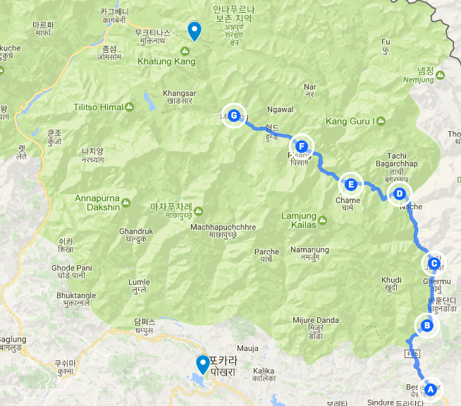

기록은 기억을 완성한다.
2017년 04월 17일
여행 D+14, 안나푸르나 D+6
오늘 이동한 경로 (F) -> (G) (총15.5km)
Lower pisang(3250m) -> Manang(3540m)

기록은 기억을 완성한다.
어제 인터넷에서 산행시 베낭 짐 싸는법을 배웠다. 무거운 짐이 위로 가벼운짐이 아래로 가야한다고 한다. 그래서 똑같이 아침에 내 베낭을 재 조정해봤다. 오늘 좀더 쉽게 오를수 있을것 같아 기대 된다.
아침식사 피자를 먹었다. 그랬더니 다들 아침에 왠 피자? 이러면서 놀란다. 미국넘 네팔넘 네덜란드 아르헨티나인 캐나다 가족들 할것없이 모두 물어본다. 근데 내가 더 신기했다. 아침에는 꼭 아침에 먹던 음식을 먹어야하나? 다 고정관념이다. 에드워즈 버네이즈가쓴 프로파간다라는 책에 따르면, 베이컨 회사의 수익을 위해 대중에게 아침엔 베이컨이 건강에 좋다는 관념을 심었는데 그것이 고정관념화 되어 미국인의 아침식단이 베이컨 빵 계란이 되었다고 한다. 이 얘기를 패트릭과 캐나다 아빠에게 말해줬다. 모두 수긍했다. 백인넘들과 논쟁에서 이긴것같은 느낌이라 통쾌했다.
네덜란드인 로즈는 항상 노트에 수기로 일기를 적는다. 내가 본 대부분 여행자들이 까페나 식당에서 그렇게 일기를 적었다. 로즈는 하루에 4~5페이지의 일기를 쓴다고한다. 도데체 뭘 그렇게 많이 쓰는지 궁금해서 물어봤다. 그녀는 그날 본것, 느낀것, 생각한것, 만난사람들, 그리고 그들에게 들은 말들 등을 기록한다고 한다.
기억은 과거의 것이다. 과거의 순간을 완벽하게 똑같이 떠올릴 수는 없다. 그렇게 기억은 변형되어 저장되어 있다. 기록은 기억을 완성한다. 기억은 기록으로 인해 더 풍성하고 생생해진다. 우리가 기억하는 모든 것은 그렇게 우리 뇌속에서 새롭게 재구성된 것들이다.
기록을 위한 도구로 사진이든 영상이든 글이든 모두 좋다. 하지만 사진만으로는 본것 밖에 기록하지 못한다. 내가 느낀것, 생각한것, 누군가와 만난것, 그들과 대화를 나눈것, 그리고 누군가 내게 가르쳐준것 등은 사진만으로는 기록할 수 없는 것들이다. 그래서 나는 최대한 문장으로 그것을들 기록 하려한다.
여행의 마지막은 기억만이 남는다. 어쩌면 나는 나중에 떠올릴 그 기억을 만들기 위해 9개월이라는 시간을 투자했는지도 모른다. 그렇기 때문에 나는 하루의 상당부분을 기록하는데 할애한다.
걷다가 어떤 생각의 조각이 떠오를 때가 있다. 그 때 적어놓지 않으면 그 생각을 놓치는경우가 종종 있었다. 그래서 중간중간 잠시 멈추고 간략하게 기록해 놓는다. 숙소에 도착해서도 자기전까지 그날 있었던 일들을 모두 적는다. 여행 마지막에 내가 얻을 수 있는 기억은 결국 얼마나 잘 기록했는지에 달려있는것 같다.
Comfort Zone
가족 여행자를 만났다. 부모는 학교 선생이고 13살 정도되는 아들과 딸을 동행하며 여행하고 있다. 정말 멋져보였다. 거의 1년을 여행하고 네팔 이후에 독일을 거쳐 다시 캐나다로 돌아간다고 한다. 아들 핀은 무척 호기심이 많고 활발하다. 그 두 어린애들은 얼마나 훌륭하게 성장할까? 나는 그런 기회를 갖는게 무척 부러웠다. 정형화된 교육만 가르치는 학교따위는 가지 않으면 어떤가. 나도 만약 자식이 생긴다면 그렇게 같이 여행을 다니고 싶다는 생각이 들었다.
여행은 때로는 거지같은 숙소에서 머물게 하고, 찬물로 샤워하게 하며, 가끔씩 벌레에 물리고 상처나게 하기도 한다. 하지만 그런 경험들은 모두 안전한 집에서는 경험할 수 없는것들이다. 그런 힘들었던 경험들을 나중에 떠올릴 때면 항상 얼굴엔 미소가 떠오른다. 여행은 그렇게 안전지대(comfort zone)을 벗어나게 하는 최고의 수단이다.
지금 나는 여행 14일 째다. 많은 사람들에게 이것을 말하면 정말 많은 축하를 받는다. 그렇게 여행이라는것은 많은 사람들이 얻고자하는 선물인것이다.
구불구불하게 올라가는 길은 항상 중간에 지름길이 있다. 하지만 경험이 없다면 항상 그것을 놓치고 가던대로 먼길을 돌아가게 된다. 주위를 잘살피자, 그렇지 안으면 기회를 놓치고 그저 살던대로 사는 수가 있다.
그 지름길은 항상 더 가파르고 오르기 힘들다. 그렇지만 더 빠르고 유용한 길을 안내한다. 지름길을 오를 때 경험하는 육체적 힘듦은 그저 더 좋은것을 얻기위한 댓가일 뿐이다.
가이드 타쿠어가 멀리있는 틸리초 피크를 가리키며 보여줬다. 틸리초 피크 바로 옆에는 틸리초 호수가 있는데 세계에서 가장 높은 곳에 위치한 호수라고 한다.
원래는 틸리초 호수는 거의 5000미터가 넘기 때문에 고산병이 우려되어 가지 않으려고 했다. 일정도 더 오래걸리기도 하고 말이다. 그리고 Y가 틸리초호수에서 고생했다는 말을 듣기도해서 두려웠다. 하지만 세계에서 가장 높은 호수라는 말 단 한마디에 그 모든것을 극복하고 갈만한 가치가 있겠다는 생각이 들었다. 과연 내가 틸리초 호수에 가게 될까? 알수 없다. 이것이 바로 결정되지 않은 미래의 즐거움이다.
 멀리 보이는 틸리초 피크
멀리 보이는 틸리초 피크
6년차 여행자와의 만남
걷고 또 걷다가 두 명의 트래커를 만났다. 한명은 세리나(이탈리아) 또 다른 한명은 밸런타인(프랑스)다 (사진 왼쪽부터, 맨 오른쪽은 패트릭임) 놀랍게도 세리나는 6년차 여행자라는 사실을 알게 되었다. 정말 여행을 가게 되면 9개월 여행은 짧은 여행이라는 사실을 알게된다. 세리나는 현재 26살로 고등학교를 졸업하고 바로 여행을 떠나게 되었다고 한다. 그리고 중간중간 일을하면서 여행자금을 모은다고 한다.
그녀는 네팔에 오기전에 인도에서 6개월 있었다고 한다. 그런데 흥미로운 점은 대부분의 여행자가 많이다는 주요 명소를 별로 가지 않았다는 사실이다. 여행은 목적지 자체를 찍는것 보다, 그 여정이 더 중요하다. 여행을 통해 느끼고 경험하는 것들은 결국 그 여정에서 느끼는것들이기 때문이다. 그녀는 그런 여행을 하고 있는것이다.
이 친구는 도데체 이 모든 여행이 끝나면 어떤일을 하고 살까? 어떤 계획이 있을까? 궁금해서 물어봤다. 보통 여행 이후에 더욱 멋진 삶을 기대한다. 그런 답변을 예상했는데 아니었다. 계획하지 않았다는것이다. 심지어 여행이 언제 끝날지도 정해지지 않았다. 그녀는 그냥 현재에 충실하게 살고 싶다고 했다. 놀라웠다. 이것의 6년차 여행자의 어떤 깨달음 같은것인가?
나는 미래의 노예이다. 당장 9개월뒤 돌아가야할 곳이 있고, 앞으로의 삶을 고민하고 걱정한다. 정해지지 않은 미래가 내게 닥쳐오는것이 두렵다. 이 여행은 어쩌면 그런 미래가 닥쳐왔을때 더 유연하게 대처하기 위한 연습일지도 모른다. 심지어 여행이후에 더 나은 사람이 되고 싶어서 여행을 하는것이기도 하다. 하지만 세리나는 그런것이 전혀 없는것 같았다. 정해지지 않은 미래를 두려워 하지 않는 것이다. 미래를 대비하기 위해 굳이 여행을 통해 더 좋은 것을 얻으려고 하지도 않는다. 그저 현재에 충실하는것이 세리나의 여행 철학이며 삶의 모습이다.
9개월 여행을 마칠즘에 회사를 때려치고 하던 여행을 계속 하는것을 한번 상상해봤다. 과연 내가가진 모든 것들을 내려놓고, 2년 3년 동안 계속 여행 할 수 있을까? 절대 못할것 같다. (아직까지는) 하지만 언젠가 그냥 떠돌며 자금을 모으고 여행을 하며 사는것 나쁘지 않은 삶인것 같다.
 왼쪽 부터 세레나(이탈리아), 밸런타인(프랑스), 패트릭(미국)
왼쪽 부터 세레나(이탈리아), 밸런타인(프랑스), 패트릭(미국)
따라다니기만 하는것은 여행이 아니다.
거의 4일째 패트릭과 가이드 타쿠어와 동행하고 있다. 오늘 일부구간은 이 친구들과 떨어져서 뒤쳐저서 이동했다. 오랫만에 혼자 걷는다. 거대한 안나푸르나 산에 둘러싸여 걷고 있는데 마치 탐험가가 된 느낌이다. 가는길에 멀리 작은 호수가 보인다. 이친구들은 그냥 앞으로 가고 있지만 나는 그 호수에 한번 가보기로 했다. 깜짝 놀랄만할 정도로 아름다웠다. 오늘 본 최고의 장면 이었다. 따라가니기만 하지 않고 나만의 길을 걸었기 때문에 얻을 수 있었던 것이었다.
점심을 먹고 숙박을 하러 하루 2개씩 매일 다른 롯지를 경험하다보면 대부분 형편없는 롯지이지만 가끔씩 정말 잘 만든 롯지를 만나게 된다. 빈틈없이 채워진 벽과 바닥, 나름 훌륭한 UX도 반영되어있기도 하다. 집 주인이 무척 꼼꼼한 사람이라는 느낌을 들게한다. 이틀전에 만난 롯지가 그랬고 오늘 점심을 먹었던 롯지가 그랬다. 처음에 주인이 직접 만든것인지 알았는데 물어봤더니 그건 아니고 엔지니어에게 설계 의뢰를 한다고 한다. 하지만 주인이 어떤집을 만들고 싶냐에 따라 천지차이의 롯지가 만들어진다고 한다. 잘 만든 롯지처럼. 내가 생산하는 모든것을 꼼꼼하게 만들겠다는 다짐을 하게 된다.
점심에 만난 안나푸르나 2봉, 4봉, 3봉, 틸리초피크 (사진 왼쪽부터)
점심을 먹고 마낭으로 출발했다. 마낭은 3500m고지로 본격적인 고산병이 시작되는 높이이기도 하다. 모든 트레커가 이곳에서 2일을 묶는다. 고산에 적응하기 위해서다. 이곳에서 하루만 묶고 더 높은 곳으로 올라가게 되면 틀림없이 고산병을 심하게 겪고 아래로 내려오게 될 것이다.
어제 묶었던 로우피상(3200m)에서 고산때문에 약간의 두통이 있었는데 오늘 아침에는 매우 상쾌했었다. 그사이에 몸이 고산에 적응한것이다. 약간 자신감이 생겼다. 몸이 점점 적응하는구나. 마낭에 올라갈때 약간 걱정했지만 다행이 어제 적응한 고산이 오늘 두통없이 마낭 까지 도달하게 했다. 성공했다. 이제 2일동안 천천히 쉬면서 몸을 적응할 것이다.
이곳 롯지에서 한국인을 만났다. 거의 60대 가까워보이는 어르신이다. 네팔에 경험시 벌써 6번째라고 한다. 한국말을 잘 하는 가이드와 포터를 고용해서 다니고 있었다. 한국인 어른이랑 대화하면 또 분명 훈계나 들을텐데 꺼려진다. 그래도 어떤 분인지 궁금하긴 하다.
오랫만에 고기를 먹었다. 야크 고기로 만든 햄버거다. 약간 고기에서 냄새가 났지만 충분히 참을수 있는 정도 였다. 엄청나게 맛잇었다. 다 먹었는데 그래도 배고프다.